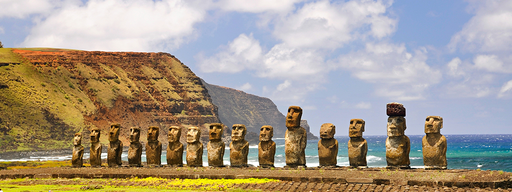

Isla de Pascua (CHILE)
RAPA NUI
No hay otro lugar habitado en el mundo que esté tan aislado en el mar como la polinesia chilena. Así de única es Rapa Nui (Isla de Pascua). Y es esa misma condición la que le otorga su autenticidad y un aura de fascinante misterio. ¡Ya es hora de que vengas a descubrir sus secretos!
Explora Rapa Nui, sus playas con arena de color rosa, los volcanes y praderas que la componen, y sus más de 1.000 moai que fueron testigos silenciosos de una compleja sociedad.
Descubre la intrigante cultura del pueblo rapa nui durante la Tapati, fiesta tradicional que se realiza en febrero, en la que se ponen a prueba las habilidades de los diversos equipos locales.